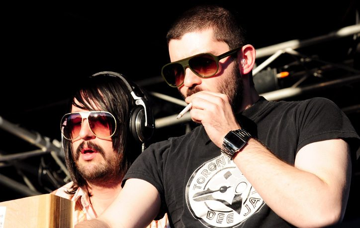

UPDATED: MSTRKRFT return to Australia


_(3986307737).jpg){kind=link}
Part of the ‘maximal’ electro movement that shook the dance music world to its core last year, Canadian DJ/producer duo MSTRKRFT will be back in the country in August to smash us to pieces once again. Known by many for their tendency for their tendency for wearing scary looking masks, as well as for throwing down head-caving slabs of dirty, noisy and very French sounding electro, they’ve definitely succeeded in pushing their sound well beyond just the clubs: this has a lot to do with the wide range of remixes they’ve been responsible for, including big names like Juliette and The Licks, The Gossip, Armand Van Helden , Kylie Minogue and Bloc Party.
Our good friends at Fuzzy will be bringing the pair out again, who were last responsible for touring them for the national Parklife festival last year. MSTRKRFT will be headlining the next installment of Killer in Sydney and Melbourne, and we’ve just been informed of several extra dates! Check em out below.
Catch MSTRKRFT when they return to Australia…
Fri 1st August – Boomtick present MSTRKRFT venue TBA, Perth
Fri 2nd August – Splendour On The Grass, Byron Bay
Friday 8th August – KILLER featuring MSTRKRFT, Prince Bandroom, Melbourne
Saturday 9th August – KILLER featuring MSTRKRFT, The Metro, Sydney
And have a look at the ultra-funky disco/electro clip for Street Justice...